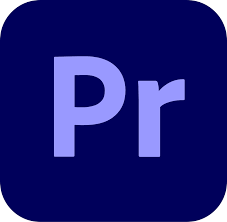
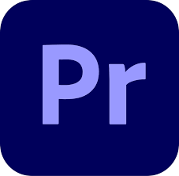

ABOUT ME
I am Mishti Porwal, a design student at ISDI specialising in Communication design. But why am I so drawn to design is a question that has bugged me for quite a long time, and I think I have an answer now. Design is something I lean towards because it helps me have freedom of thought, and the joy of creation that it brings me is immaculate. Apart from design art, film and music also heavily inspire me and seep into my design projects.